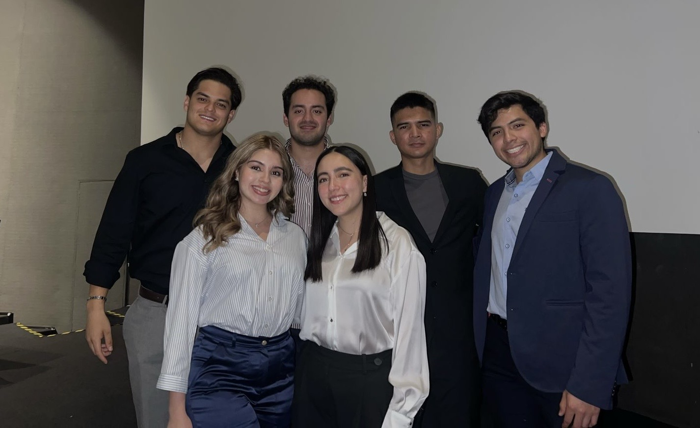

In this project, the goal was to create a stock management app for the automotive business sector of the company.
CINIA is a socially responsible company that employs people from all backgrounds, including individuals with disabilities such as deafness, blindness, visual impairments, and motor disabilities. This enterprise deserves recognition, as 90% of its employees are people with disabilities.The organization has adopted a culture focused on designing processes that are simple and easy to follow. They manufacture Poka-Yokes to help collaborators work more efficiently, reduce human errors, and minimize rework in assembly components, ultimately streamlining operations.
The challenge we faced as a team was developing a stock management app in less than 5 weeks, while also managing the different points of views and skills within our multidisciplinary team, which included Industrial and Systems, Civil, and Computer Technology Engineers.
As an initial step for the beginning face of the project, we created our project charter with the objective of gaining a clearer understanding of our main challenge and ensuring every collaborator was on the same page.
Once we completed the project charter, we moved on to planning the activities we needed to carry out. We decided to use the "waterfall" project management technique as the basis for our initial activity schedule.

During the first week, we focused on defining the project charter and planning the activities. We also established communication channels using WhatsApp and Microsoft Teams to facilitate collaboration among team members.
These tools allowed us to share ideas, updates, and feedback in real time.
In the second week, we decided to update our project management approach to a combination of SCRUM and a Kanban board, with the purpose of optimizing our time. This allowed us to hold weekly sprint reviews to track progress and evaluate our advances.
We used the DevOps Azure to facilitate the visualization of the Kanban Board and Backlog status
As a result of the great practices realized by the team, we were able to deliver the project on time, within the established budget, and with a high level of quality.
The stock management app was successfully implemented and will be used by the company to manage their inventory of Poka Yokes. The app has helped improve efficiency and reduce errors in stock management, leading to cost savings and increased productivity for the company.
Overall, the project was a success, and we were able to achieve our goals through effective project management, collaboration, and communication.

Team Members: